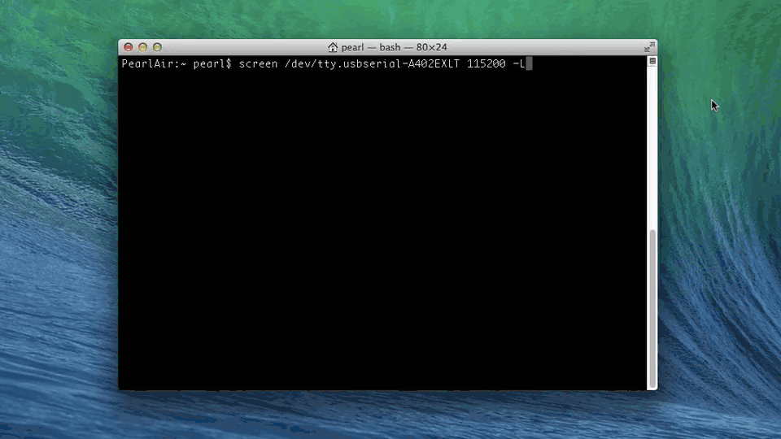
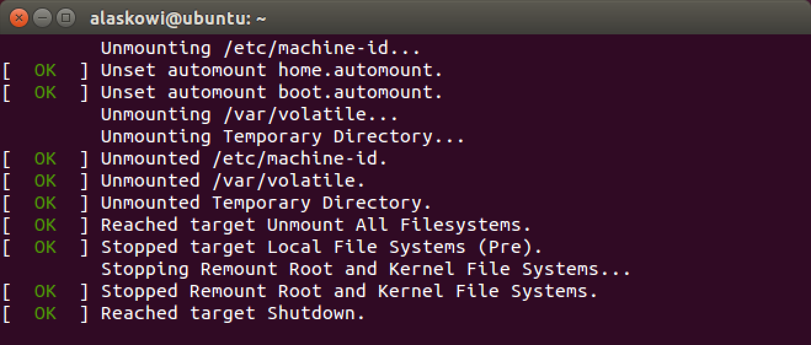
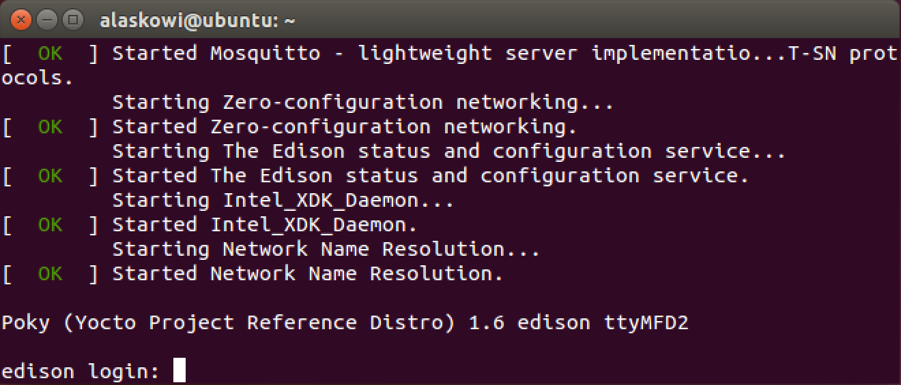

Step 3: Flash the image
Run the reboot ota command on the Intel® Edison to flash the board with the files you copied over in Step 2.

-
Establish a serial connection to the Intel® Edison.
Don’t know how? Refer to Shell Access. -
Use the
reboot otacommand to reboot the Intel® Edison from the command line.Note: This will erase everything on your Intel® Edison including configuration settings such as the board’s username and password.
reboot ota -
Your Intel® Edison will reboot and begin the flashing process with the latest image.

-
When the Intel® Edison is done flashing, you should see the login prompt.

If the firmware flash was successful, you should now be able to use the configure_edison command with the --version flag.
configure_edison --version
If the output is “120” (or higher, depending on how up to date this document is), you have successfully flashed your board!
No “configure_edison –version” option? Don’t see “120” (or higher) outputted as the build version number?
Your board was not updated with the latest image.
-
Incomplete zip downloads may cause issues. Re-download the “Yocto complete image” zip file from Intel® Edison Boards and Compute Modules - Software Downloads and try again from Step 1: Prepare built-in flash storage.
-
Mac users only: If re-downloading a new zip does not fix the issues, you can try the “Alternate Flashing Method” described at the bottom of Intel Edison Flashing Firmware on OS X - Wired.